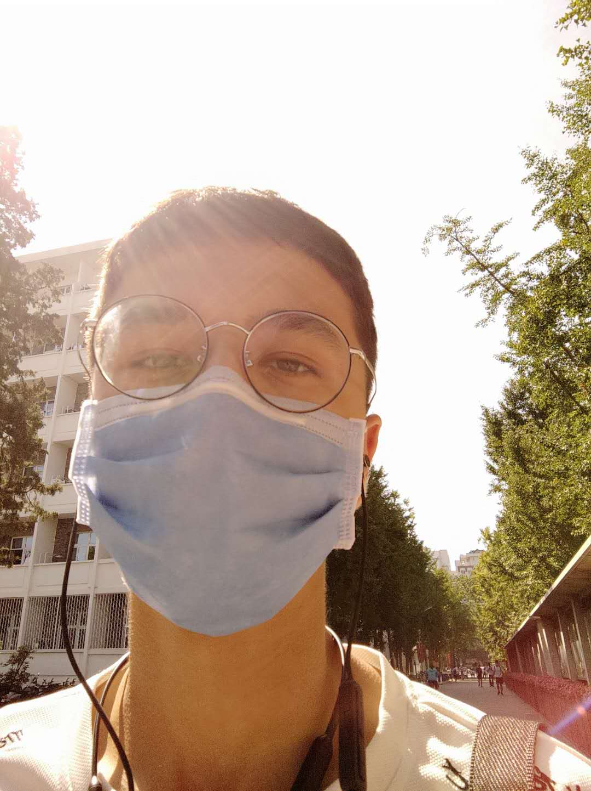

夏合迪亚尔·卡德的
性格特点

作为一个新疆小伙，很多人都以为我是那种性情豪爽的男子汉（实际上就以为我们是钢铁直男），但其实我并不是那样的，我认为我是一个十分外向，乐观开朗的人，不仅主动热情，也很喜欢帮助他人，结交朋友，虽然我的知心朋友不是很多，但是我的人缘还是比较好的，希望来到北大以后，能够在人际关系方面更上一层楼，在未名湖边蜕变成长，成为真正意义上的北大人。
当然，我不仅仅是一个热心肠的好青年，而且还是一个爱学习，乐于读书的人，要不然怎么能做到小学上四年并且考入北大呢？在最近的一次新传作业中，有人给我的评价是跳，我可以理解，毕竟我还是一个活泼好动的人，可能入不了大家的法眼，还请大家多多包涵并指正。